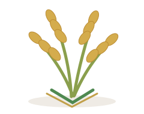
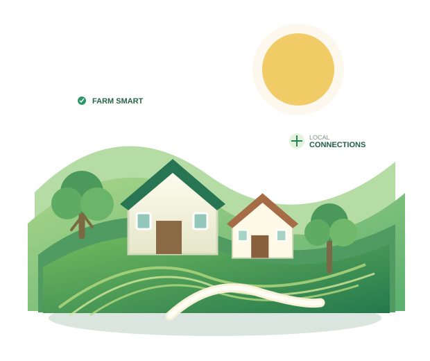
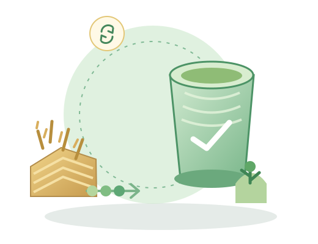

Wheat GRAMNEXA / AGRICULTURE TRENDS
Agriculture Trends
Practical information and tools for confident, informed decisions.

Paddy
Crop residueWHAT'S ON THE RADAR
Ideas shaping
the next harvest.
Topic highlights to explore. These are editorial themes, not a live news feed or a prediction of prices.
Browse government updates ↗